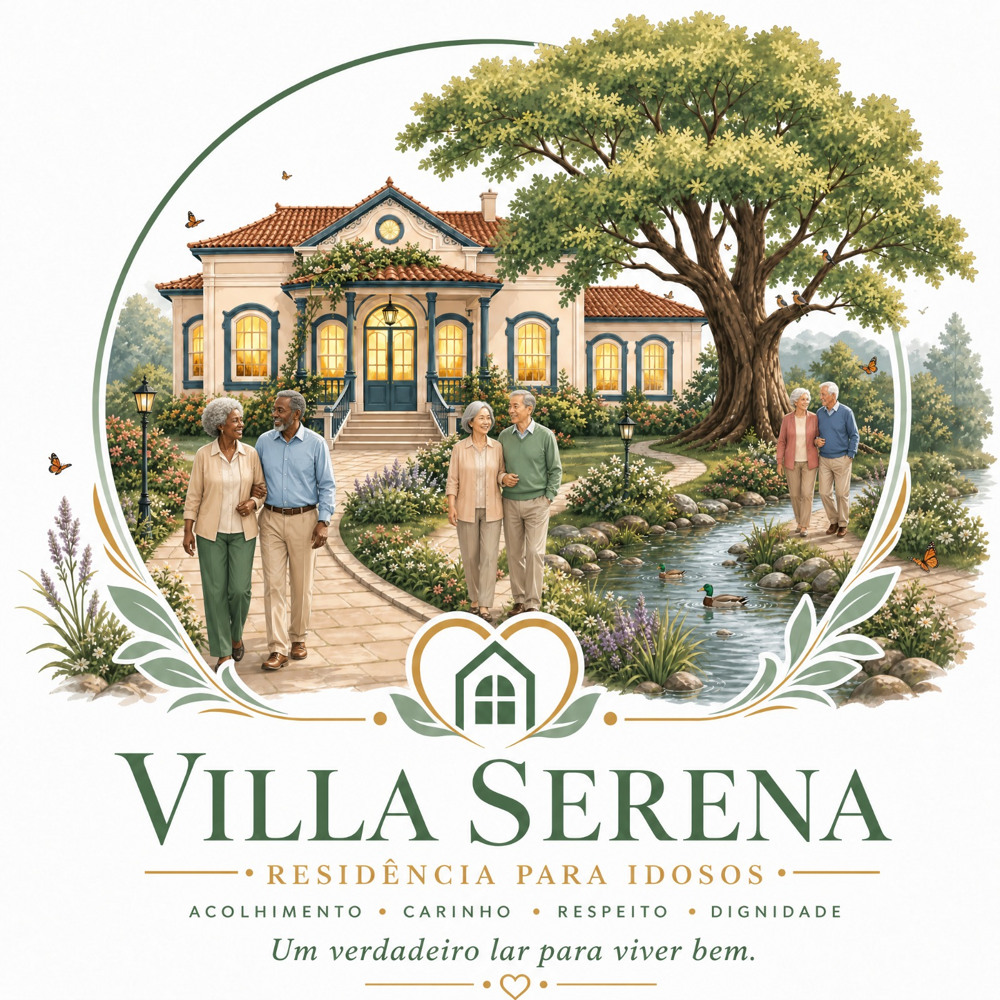

Escuta inicial
Contato responsável para compreender a situação apresentada e orientar próximos passos.
Acolhimento voluntário, convivência protegida e cuidado social para pessoas maiores de 18 anos.
A Villa Serena nasce para oferecer um ambiente de respeito, dignidade, serenidade e convivência protegida, com orientação, cuidado social e apoio à reinserção social.

Quem Somos
A Santa Casa Lar da Misericórdia Villa Serena é um projeto social de acolhimento voluntário, voltado a pessoas maiores de 18 anos que necessitam de convivência protegida, cuidado social, orientação e apoio à reconstrução de vínculos, autonomia e dignidade.
A permanência no projeto é voluntária. Cada pessoa acolhida deve conhecer as regras internas, compreender a finalidade do projeto e participar da convivência com respeito, cooperação e responsabilidade.
Acolhimento Voluntário
O acolhimento na Villa Serena é voluntário e destinado a pessoas maiores de 18 anos. A proposta envolve cuidado social, acompanhamento de rotina, apoio à documentação, orientação e encaminhamentos à rede competente quando necessário.
Contato responsável para compreender a situação apresentada e orientar próximos passos.
Verificação de finalidade, capacidade institucional, segurança coletiva e existência de vaga.
Ciência das regras de convivência, voluntariedade e responsabilidades mútuas.
Encaminhamento para serviços públicos ou privados quando houver necessidade especializada.
A Villa Serena é um projeto social de acolhimento voluntário para pessoas maiores de 18 anos, com convivência protegida, cuidado social, orientação e apoio à reinserção social.
A Villa Serena não é hospital, clínica, CAPS, internação, privação de liberdade, abrigo estatal ou unidade pública de saúde. Quando houver necessidade especializada, serão indicados encaminhamentos à rede competente.
Valores
A Villa Serena reconhece a dignidade de toda pessoa humana e afirma seu compromisso com o respeito à diversidade, à história, à origem, à cor, à raça, à etnia, à cultura, à religião, à idade, à condição social, à deficiência, à identidade e à trajetória de cada pessoa.
A Villa Serena repudia expressamente o racismo, a discriminação racial, a humilhação, a violência, o preconceito e qualquer forma de tratamento degradante ou excludente.
Apoio social com governança humana
A Inteligência Artificial Casa Lar direciona para a Charlie Echo Social, no ambiente Jus9 Verde, como apoio inicial, educativo, organizacional e responsável.
Esse apoio não substitui equipe humana, assistência social, psicologia, medicina, advocacia, atendimento emergencial ou profissionais habilitados.
Apoie a Villa Serena
Pessoas, empresas, instituições e parceiros poderão contribuir com doações, serviços, materiais, alimentos, móveis, apoio técnico, voluntariado ou outras formas de colaboração, conforme orientação contábil, jurídica e institucional.
Transparência e Governança
Separação entre documentos públicos e restritos, com proteção de fichas, documentos pessoais, imagens e histórias sensíveis.
Revisão jurídica, contábil e institucional dos documentos antes de publicação ou uso público.
Decisões institucionais devem preservar governança humana, transparência compatível e encaminhamentos responsáveis.
Privacidade
O contato inicial deve coletar apenas o necessário. Não envie RG, CPF, laudos, imagens de documentos, informações de saúde ou histórias pessoais sensíveis por este canal.
Contato
Use este canal apenas para contato inicial, apoio institucional, parcerias ou informações gerais. Se houver risco imediato, procure os serviços públicos competentes.
Não envie documentos pessoais, laudos, imagens de documentos, dados de saúde ou informações sensíveis por este formulário.